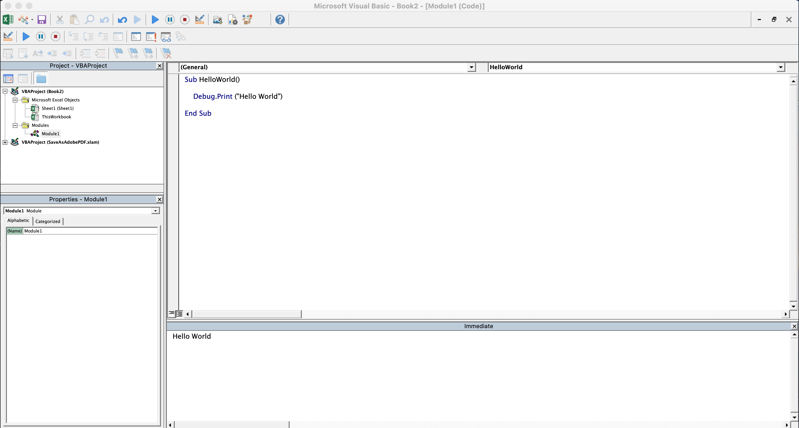
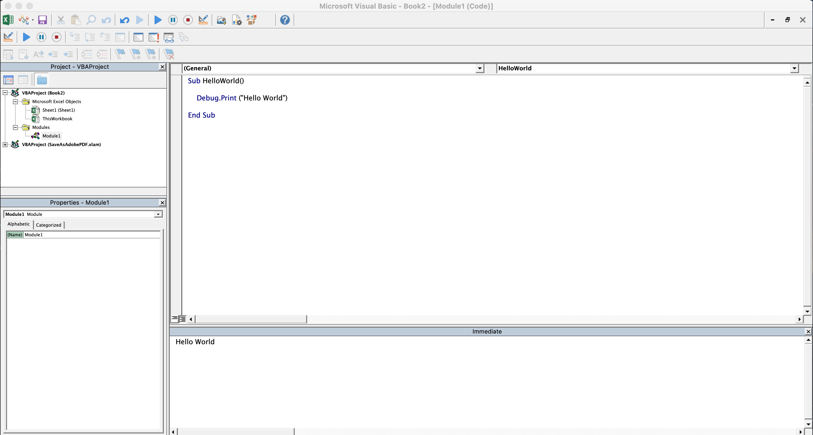

Introduction
VBA is the first language that I used to solve a real-life problem. I have been learning and
working with VBA for about 4 years now. Recently, my friend asked me to introduce him to VBA.
I decided to document the process. Teaching someone a language is a first for me. My plan is to
start with the bare minimum and expose him to exploring, researching and learning. Ideally,
once he is comfortable with programming basic scripts, I will create a lesson plan from scratch
by referring to some of the most common course-plan structures for learning a language.
The VBA Workspace
1. With any excel workbook open, press Alt+F11 (Mac: Option + F11)
2. In the left project explorer pane, right click and insert Module.
3. We can bring programmin this new module "Module1"
2. In the left project explorer pane, right click and insert Module.
3. We can bring programmin this new module "Module1"
Hello World
Traditionally, the first program that one learns in any language is how to 'print' "Hello World"
In the module, paste the follwing code and press F5.
Sub HelloWorld()
Debug.Print("Hello World")
End SubAt this stage, pressing F5 will appear to do nothing. The reason is that
the screen where VBA prints is hidden by default. To view it, click on view in the menu bar
and select Immediate Window. You should be able to see the print outputs from your previous attempts.
On a Mac, this is how things should look like at this point:

